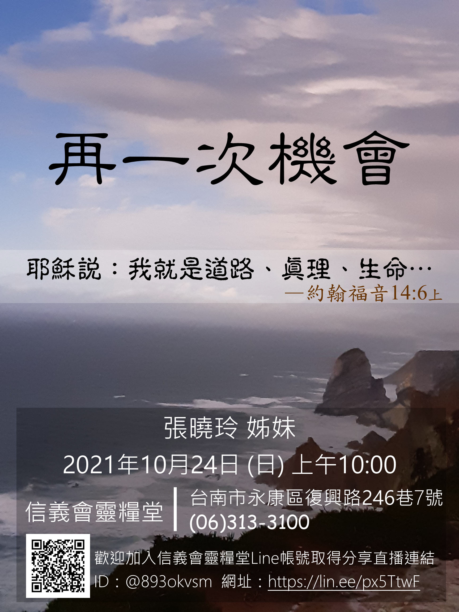

基督教臺灣信義會
靈糧堂 週報


1. 參加本堂60週年手抄聖經行列者，若尚未索取材料，可至教會辦公室索取，並登記要負責的書卷章節。在11/30前，交還給辦公室( 原則方法請參閱電子週報)。另外，徵求和我們分享您真心話之影片。選答問題，請使用高畫質手機或相機橫向拍攝15秒鐘（以內）的影片。透過選取的問題，來跟我們分享這個「家」的故事。(題目：1.你對教會的深刻印象2.教會的挑戰或困難3.你最喜歡教會的什麼？4.最感恩的事5.最喜歡的經文6.給教會的祝福)
2.
本週主日崇拜後召開2021年度執事改選，本次共選三位執事，候選人為：吳怡儒執事、洪迎嘉姊妹、黃良銘執事。請年滿十八歲以上之基督徒，並於本堂受洗、堅振禮或入會禮之教友，或在本教會聚會滿一年之基督徒，預留時間參加此次執事改選選舉。教會將於主日10月24日舉行執事按立典禮。
3. 10月24日為福音主日，邀請張曉玲執事分享「再一次機會」，請弟兄姊妹能邀請親朋好友來參加。
4. 教會於每週三早上七點～八點有線上禱告會，歡迎您同蒙主恩，在禱告中得神能力，請向辦公室報名加入群組以便參加。
5. 本堂即日起恢復崇拜之後提供每週主日愛筵，歡迎弟兄姊妹留步參加。
星期 |
時間 |
聚會名稱 |
|---|---|---|
主日 |
上午10點00分 |
主日崇拜、兒童主日學 |
主日 |
下午12點30分 |
長青小組、以勒小組、約書亞小組、保羅小組 佳美小組、盛愛小組、帝寶小組 |
週三 |
晚上08點00分 |
美女小組 |
週四 |
早上09點30分 |
良善小組 |
週四 |
晚上07點15分 |
喜樂小組 |
週四 |
晚上08點00分 |
凡恩小組 |
週五 |
晚上07點30分 |
牛棚小組、得勝小組、百合小組 |
週五 |
晚上08點00分 |
1+7小組 |